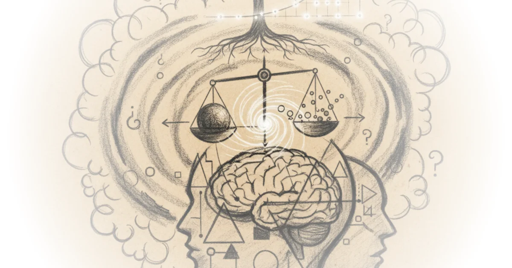

Nature of genius 124 meg urry interview Yale University · Yale Courses ·Nov 2, 2022 · 34 min read · Philosophy
Nature of genius 112 genius and celebrity Yale University · Yale Courses ·Nov 2, 2022 · 12 min read · Philosophy
Russell's paradox - a simple explanation of a profound problem Jeffrey Kaplan · Jeffrey Kaplan ·Sep 8, 2022 · 26 min read · Philosophy
Does the past still exist? Sabine Hossenfelder · Sabine Hossenfelder ·Jul 23, 2022 · 14 min read · Philosophy
Semester ethics course condensed Jeffrey Kaplan · Jeffrey Kaplan ·Jul 14, 2022 · 17 min read · Philosophy
Semester ethics course condensed into 22mins Jeffrey Kaplan · Jeffrey Kaplan ·Jun 9, 2022 · 20 min read · Philosophy
Let's read! Miranda fricker,2003,"epistemic injustice and a role forVirtue in thePolitics ofKnowing" Kenny Easwaran · Kenny Easwaran ·Apr 19, 2022 · 64 min read · Philosophy
Let's read! John hardwig, 1985, "epistemic dependence" Kenny Easwaran · Kenny Easwaran ·Apr 12, 2022 · 55 min read · Philosophy
Let's read! Jennifer lackey, 2006, "knowing from testimony" Kenny Easwaran · Kenny Easwaran ·Apr 5, 2022 · 57 min read · Philosophy
Let's read! Kenny easwaran, 2011, "bayesianism II: Applications and criticisms" Kenny Easwaran · Kenny Easwaran ·Apr 1, 2022 · 57 min read · Philosophy
Let's read! Kenny easwaran, 2011, "bayesianism i: Introduction and arguments in favor" Kenny Easwaran · Kenny Easwaran ·Apr 1, 2022 · 59 min read · Philosophy 
The missing key to understanding christopher nolan Tom van der Linden · Like Stories of Old ·Mar 31, 2022 · 16 min read · Philosophy
Rules for interacting with college professors - office hours, email, letters of recommendation Jeffrey Kaplan · Jeffrey Kaplan ·Mar 9, 2022 · 20 min read · Philosophy
Let's read! David hume, 1748, sect. IV of enquiry concerning human understanding Kenny Easwaran · Kenny Easwaran ·Mar 6, 2022 · 52 min read · Philosophy
Let's read! Laurence BonJour, 2014, "in defense of the a priori" Kenny Easwaran · Kenny Easwaran ·Mar 1, 2022 · 48 min read · Philosophy
Let's read! Kourken michaelian, 2011, "generative memory" Kenny Easwaran · Kenny Easwaran ·Feb 19, 2022 · 74 min read · Philosophy
The nature of space and time ama Matt O'Dowd · PBS Space Time ·Feb 10, 2022 · 26 min read · Philosophy
Does superdeterminism save quantum mechanics? Or does it kill free will and destroy science? Sabine Hossenfelder · Sabine Hossenfelder ·Dec 18, 2021 · 16 min read · Philosophy
The psychology of racism in jim crow America Then & Now · Then & Now ·Nov 11, 2021 · 27 min read · Philosophy
The delayed choice quantum eraser, debunked Sabine Hossenfelder · Sabine Hossenfelder ·Oct 30, 2021 · 10 min read · Philosophy
Lecture #11: Taking notes effectively - which words should you write down? Jeffrey Kaplan · Jeffrey Kaplan ·Oct 15, 2021 · 15 min read · Philosophy
Was julius caesar a military tyrant or a saviour of Rome? Kings and Generals · Kings and Generals ·Aug 17, 2021 · 18 min read · Philosophy
Lecture #9: How to read so that you *retain* information Jeffrey Kaplan · Jeffrey Kaplan ·Aug 17, 2021 · 21 min read · Philosophy
How much of the reading do you have to do in college courses? Jeffrey Kaplan · Jeffrey Kaplan ·Aug 6, 2021 · 19 min read · Philosophy
Lecture #7 - my method for defeating procrastination Jeffrey Kaplan · Jeffrey Kaplan ·Jul 26, 2021 · 17 min read · Philosophy
The invention of individual responsibility Then & Now · Then & Now ·Jul 20, 2021 · 34 min read · Philosophy